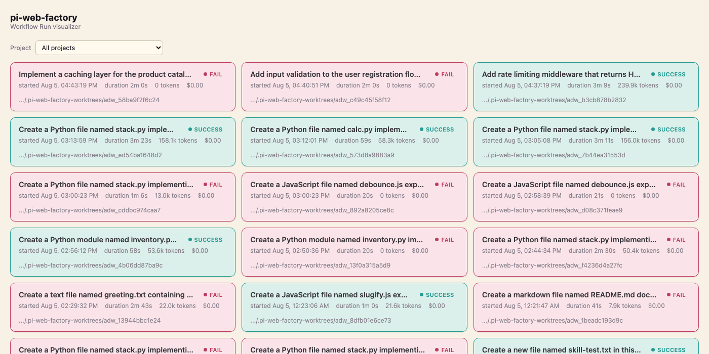
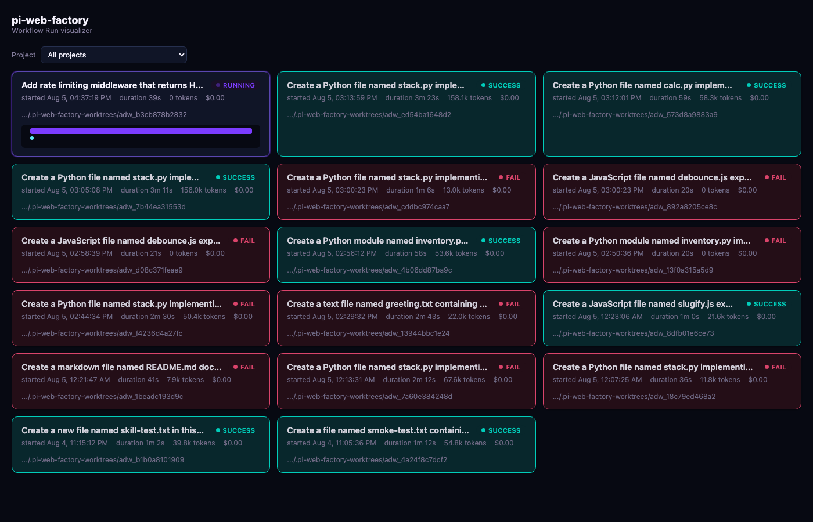
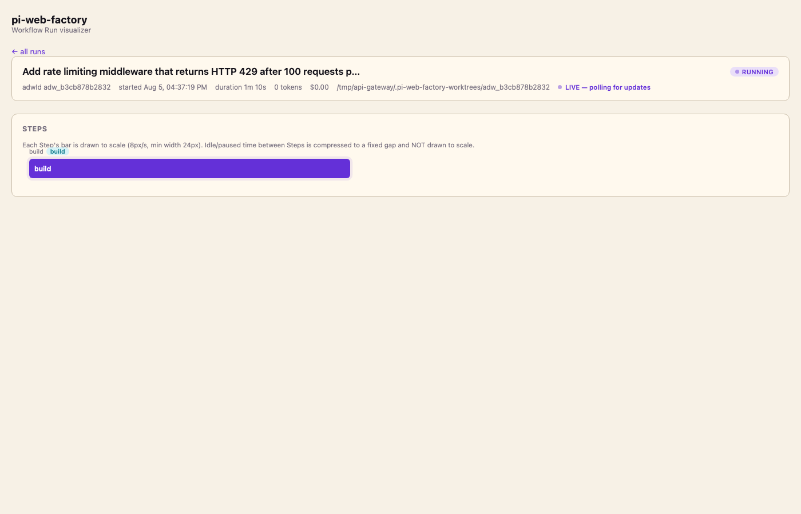
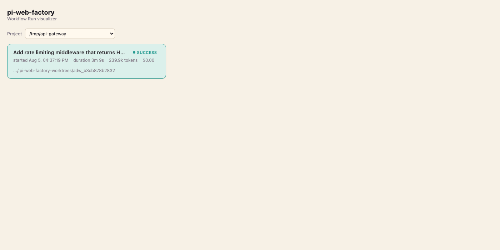
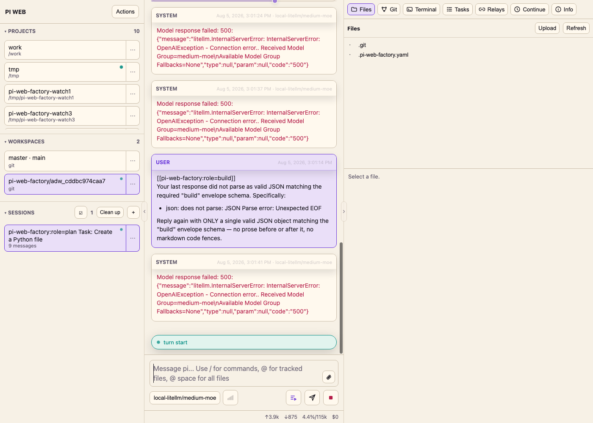

Triggered — via /skill: command or cli.ts directly
--project, --workflow, and your prompt get validated. An unknown
project config or Workflow name fails immediately with a specific message, not a stack trace.
A deterministic control plane for AI coding agents, built on top of your existing
jmfederico-pi-web stack. As of today it's fully baked into the live container, triggerable
from inside any ordinary pi-web session via a slash command, and has a real dashboard of its own. This
page leads with how you'll actually use it day to day — the CLI section further down is for scripted/
advanced use, not the normal path.
pi-web-factory brings the SSSF pattern — deterministic code owns sequencing, retries, and acceptance; an AI agent works inside one bounded, typed Step at a time — to your running pi-web deployment. It drives real pi-web sessions over the same HTTP/WebSocket API your browser uses.
writes: allowlist.
Anything it touches outside that allowlist gets rolled back automatically, and the Step is
reported as failed, not silently patched up.factory.db) as it happens, browsable in the visualizer or
queryable directly.adwId, its own git worktree, its own pi-web
session, and its own row of observability data.plan-build-review.kind: agent (a pi-web prompt/response turn) or kind: code (a plain
subprocess, no model call). A kind: loop Step repeats its inner Steps up to a
bound.plan, build, review, run-tests, etc. Carries
model, thinking level, write allowlist, and (for agent Roles) a real system prompt./skill: commandsThis is the normal way to use pi-web-factory: from inside any ordinary pi-web session, sitting in a project you're already working in, just say what you want.
/skill:plan-build-review <task>,
/skill:bounded-build-review <task>, or
/skill:plan-build-test <task> — pick the Workflow, pi loads that skill and runs
it directly. No ambiguity.pi-web-factory skill picks the right Workflow
for you.Example — typed directly into an ordinary pi-web session's message box:
/skill:plan-build-review Add a /health endpoint that returns 200 OKWhat happens next, automatically, inside that same conversation:
pwd —
it's already sitting in the right place) and runs
bun $HOME/pi-web-factory/cli.ts --project <path> --workflow plan-build-review "<task>"
via its own bash tool./skill:<name> commands, and
the description text is what the model matches against for the natural-language path. Nothing custom
was built to make this work; the two-mode design was already there, this project just uses it.
| Trigger | Shape | Pick it when… |
|---|---|---|
/skill:plan-build-review | plan → build → review (no loop) | a clear task where one review pass is enough — the default choice. |
/skill:bounded-build-review | build → loop{review, build} until approved, max 3 rounds | you want correction rounds baked in, or the task is finicky/security-sensitive. |
/skill:plan-build-test | plan → build → test (a real command, not another agent) | you want a mechanical, code-based acceptance check — needs the project to have a .pi-web-factory.yaml declaring its test command. |
All three are just entries in chains/registry.ts; adding a fourth shape is a YAML file,
not new TypeScript.
A real-time dashboard over every Workflow Run's trace data, restyled to match pi-web's own configured theme exactly (same colors, same fonts, same light/dark "Auto" behavior — pulled straight from pi-web's own shipped theme tokens, not approximated), live at:
Open the visualizer → http://192.168.1.226:8090Deployed as its own compose service (reusing the same image pi-web-factory is baked into, M-068) — comes up and down with the rest of the stack, no separate process to remember to start.
The main page is a responsive grid of cards — every Workflow Run visible at a glance, each with its own condensed live timeline, no click-through needed just to see what's happening. Sort order is deliberate: still-running runs first (oldest-started at the very top), then completed runs newest-first below.


prefers-color-scheme, exactly like pi-web's own "Auto" mode.


A live testing pass today (multiple real Workflow Runs, real failures, real infra hiccups) surfaced several genuine findings — some already fixed, some flagged for a later decision.
The single biggest complaint: a failed run used to just say a generic, unhelpful sentence — no way to tell what actually went wrong. Now the agent's real raw response (or an explicit "returned no response text at all" for a genuinely empty one) and the actual violating filename(s) are surfaced directly.
UNPARSEABLE — the agent's response never matched the required envelope schema after retriesUNPARSEABLE — the agent returned no response text at all (empty) after retriesPERMISSIONS-VIOLATION — the agent wrote outside its allowed paths; changes were rolled backPERMISSIONS-VIOLATION — the agent wrote outside its allowed paths (stack.py); changes were rolled backA direct completion test against it returned an empty content field with a
non-empty reasoning_content field and finish_reason: "length" — it
exhausted its token budget entirely inside invisible "thinking" before emitting any real output.
This is very likely the actual cause of most of today's empty-response failures, not model
"misbehavior" — qwen (the previous backend) had special handling elsewhere in this stack for
exactly this class of problem, which pi-web-factory's own Role config doesn't yet have. Switched
back to qwen for stability; a smaller Ornith quant (Q4_K_M, ~20.6GB, MTP tensors verified) is
downloading in the background for more memory headroom to experiment further later.
Found live: a build Step claimed it wrote a file that, in fact, was never written.
review correctly caught the discrepancy in its own summary — but
plan-build-review has no loop and does no post-processing on approved, so
the overall Workflow Run still came back SUCCESS. Filed for a real design decision
(does a no-loop review-ending Workflow need its own distinct "rejected" outcome, or is the fix just
surfacing approved/findings more visibly?) rather than a unilateral
patch.
A read-only review Step legitimately ran the code it was reviewing to check it
actually works — which left behind a Python __pycache__/*.pyc file, correctly detected
as an unauthorized write and rolled back. The rollback is working exactly as designed; the open
question is whether well-known incidental build artifacts (bytecode caches, etc.) should get a
default exemption.
With big-moe (118B) and medium-moe (35B) both loaded, the box sits at
roughly 122GB/124GB used — running two concurrent agentic test Workflows was enough to trip the
OOM killer on the smaller model, twice, in one afternoon. Also found (separately) a real
port-binding bug where a container's declared port mapping silently wasn't active despite a
matching compose config — a plain restart didn't fix it, a force-recreate did.
Config/data modules, the generic interpreter, a thin chain layer, a CLI, skills, and the visualizer
— all baked into the same jmfederico-pi-web image and always re-synced on container start,
so the running copy never drifts from what's committed to git.
factory.db.Bun.serve dashboard over factory.db, its own compose service.<project>/.pi-web-factory.yaml
declares that project's own test/typecheck/lint commands.
pi-web-factory's own factory.config.yaml only holds the shared Role registry.
Walking through bounded-build-review — build → loop{review, build} until
approved (max 3 rounds) — since it exercises every mechanism the simpler Workflows share, plus
the loop.
--project, --workflow, and your prompt get validated. An unknown
project config or Workflow name fails immediately with a specific message, not a stack trace.
<project>/.pi-web-factory-worktrees/<adwId>, on a new branch,
invisible to the target project's own tracked files. The project gets registered as a pi-web
Project if it isn't already.
One real session, same kind the browser UI creates. It gets threaded through every Step in this Workflow Run.
Gets a true system prompt (a real pi extension, not prepended text). The repo is snapshotted
before and after; anything written outside build's allowlist is rolled back and the
Step fails as permissions-violation — with the actual filename now, not just a
generic message.
review (agent, big-moe, read-only) returns
{approved: boolean, findings: [...], blocking: [...]}. If rejected, the interpreter
builds a correction message from the concrete blocking findings and re-runs
build in the same session. Capped at 3 rounds; a real, distinct
loop-exhausted outcome if it never converges.
success, blocked-on-human, unparseable,
permissions-violation, failed, gate-failed, or
loop-exhausted — every branch carries the real deep-link, and every failure branch
now carries real diagnostic detail.
The /skill: commands are the normal path — this is for scripting, automation, or
debugging. From inside the pi-web container (or via the same command a Skill runs under the hood):
bun $HOME/pi-web-factory/cli.ts --project /path/to/project \
--workflow bounded-build-review \
"Add a /health endpoint that returns 200 OK"The prompt can also be a path to a file. Resume a session blocked on a question:
bun $HOME/pi-web-factory/cli.ts --project /path/to/project \
--workflow plan-build-review \
--session-id 019fcb42-c0f9-73fb-881f-b80c1b232778 \
"continue"| Code | Meaning |
|---|---|
0 | Success. |
1 | Failed (a Step errored outright). |
2 | Blocked on a human — the agent asked a question mid-turn. |
3 | Unparseable — an agent Step never produced valid JSON after retries. |
4 | Permissions violation — a Step wrote outside its allowlist (rolled back). |
5 | Gate failed — a code Step's checks didn't pass. |
6 | Loop exhausted — a loop Step's until condition was never satisfied within max_rounds. |
64 | Usage/config error — bad flags, unknown project, or unknown Workflow. |
| Role | Kind | Model | Writes | Why |
|---|---|---|---|---|
plan | agent | big-moe | specs/ | A bad plan corrupts every Step built on it. |
build | agent | medium-moe | unrestricted* | Mechanical given a good plan; runs most often. |
review | agent | big-moe | none (read-only) | Last judgment checkpoint before success or a correction round. |
scout | agent | medium-moe | none (read-only) | Pure recon. |
document | agent | medium-moe | docs/, *.md | Mechanical write-up of a known change. |
run-tests | code | — | none | Exactly the kind of Step SSSF's philosophy says shouldn't cost a token. |
* still can't touch defaults.protected_files
— permissions.ts enforces that regardless of a Role's own writes:. big-moe/
medium-moe are live-routed by scripts/set-role.sh, currently laguna and qwen
respectively — see the findings section above for why ornith is parked for now.
prompts/<role>.md and is injected as a real systemPrompt by a
deployed pi extension (before_agent_start hook) — not text glued onto the user turn.
Every Workflow Run gets its own git worktree under
<project>/.pi-web-factory-worktrees/<adwId>, on its own branch — concurrent
runs never collide, and never touch your own manual work in the project's main checkout. The target
project is auto-registered as a real pi-web Project, and every result carries a real, working
deep-link:
http://192.168.1.226:8080/?project=<id>&workspace=<id>&session=<id>Note: the visualizer's project filter groups by the real, shared project root, not each run's own unique worktree path — see the visualizer section above.
There's also a durable ticket layer sketched but not built: a trimmed .fleet-style
backlog/ → now/ → done/ queue that would let you author work
items and have them picked up later, rather than every run being manually triggered.
cli.ts's argument shape was deliberately designed to be that queue's eventual calling
convention.